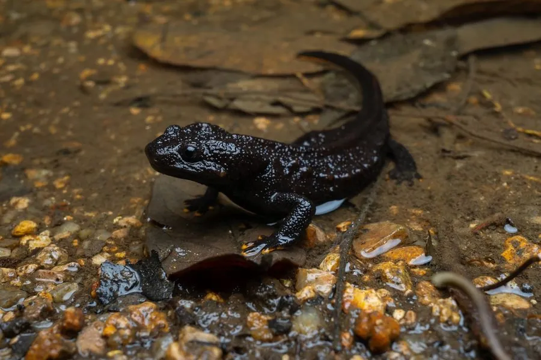

两栖动物 · 动物界
海南疣螈 Tylototriton hainanensis

海南岛特有的疣螈，体色黑褐、背脊与体侧排列橙红色疣粒，皮肤分泌刺激性毒素，栖于山地溪流与林下落叶层，数量稀少。
- 分类
- 门脊索动物门纲两栖纲目有尾目科蝾螈科属疣螈属
- 栖息环境
- 海拔 700–1000 米的山地常绿林溪流、林下落叶层与潮湿石缝
- 地理分布
- 中国海南岛中南部山区，如尖峰岭、霸王岭一带
- 保护级别
- IUCN 易危（VU）；中国国家二级保护动物；CITES 附录Ⅱ
物种志
海南疣螈体长 12–16 厘米，体形粗壮，头部宽扁，吻端圆钝，头顶两侧有明显的骨质棱脊。全身黑褐至灰黑色，背脊中央与体侧各有一列橙红或橙黄色的疣粒，形成醒目的纵纹；腹部深灰，尾侧扁。皮肤粗糙，密布颗粒状疣突，受惊时疣粒会渗出白色浆液，含河豚毒素类物质，接触黏膜会引起麻木与刺痛，捕食者吞食后可能中毒。
它们是海南岛的特有种，栖息于海拔 700–1000 米的山地常绿林溪流、林下落叶层与潮湿石缝，繁殖期进入溪流，其余时间多在陆地阴湿处活动，夜间捕食昆虫、蚯蚓、蛞蝓与小型无脊椎动物。每年 4–6 月繁殖，雌螈在水草或石缝间产卵，幼体在水中生活数月后变态。由于分布区仅限海南中南部山区，栖息地易受旅游开发、林相改造与溪流污染影响，其种群数量稀少且脆弱。
形态与习性
- 体长约 12–16 cm
- 食性昆虫、蚯蚓、蛞蝓与小型无脊椎动物
- 繁殖4–6 月进入溪流产卵，幼体水中生活数月后变态
- 毒性皮肤分泌物含河豚毒素类物质，接触黏膜会麻木刺痛
- 体色黑褐底色，背脊与体侧各一列橙红色疣粒
- 栖息海拔约 700–1000 m 的山地溪流与林下
- 分布范围仅见于海南岛中南部山区，分布区狭窄
趣味知识
- 海南疣螈背上和体侧各有一列橙红色疣粒，像缀了两串小珠子。
- 它皮肤渗出的浆液含河豚毒素类物质，接触后要立即洗手。
- 它是海南岛的特有种，只在岛中南部几片山林的溪流附近出现。